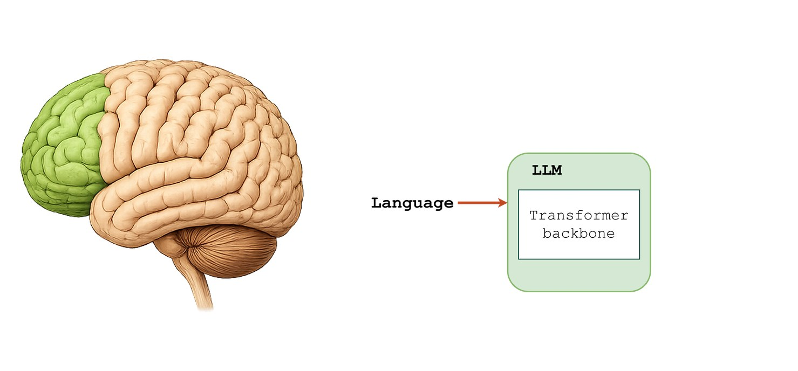
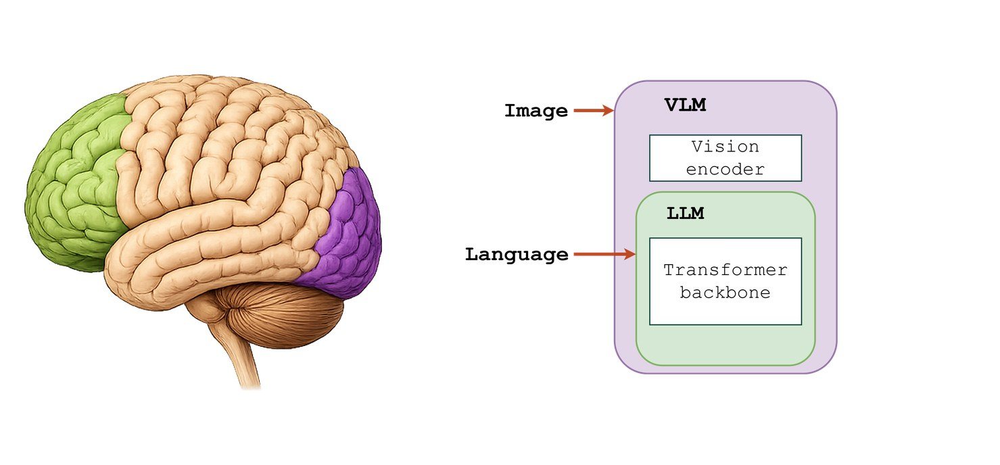

87 runs to a working policyA practical guide to fine-tuning a vision-language-action model on your own robot

This started as a master's thesis on adapting a VLA to a new embodiment and environment, and measuring how far it generalises, and 8 months later this is what worked, what did not, and what never turns up in a paper. Research articles report the configuration that worked, but rarely the runs that failed.
Headline results
Task progress: how far along the 4 stages the arm gets before it stops, each worth 0.25. It is not a success rate. The whisker is the range, across the 5 trials in the trained condition and across the 17 condition means below it.
1. Nobody can tell you which end of the range you land on
The promise of a VLA is that it arrives already knowing how to be a robot: add a handful of demonstrations, point it at your task, and it works. The published results do not support that. They range from 0% to 100%, and almost none of them say what puts a given deployment at one end or the other.



Here is the published deployment record, with my own result added at the bottom.
Table 1. Vision-language-action deployment studies. Cells marked progress are partial-credit scores, like my own; the rest are success rates.
| Study | Model | Robot | Approach (demos) | Result |
|---|---|---|---|---|
| Penn PAL Lab | π₀-FAST | Franka | Zero-shot | 42% progress |
| Chen et al. | OpenVLA | xArm | Zero-shot | 0% |
| Su et al. | OpenVLA-OFT | Soft arm | Zero-shot | 0% |
| Li et al. | π₀ | Mobile ALOHA | Zero-shot | 0% |
| Su et al. | OpenVLA-OFT | UR5 | Fine-tuned, 50–100 | 100% / 70% |
| Kim et al. | OpenVLA-OFT+ | ALOHA | Fine-tuned, 20–300 | 51–100% progress |
| Hu et al. | π₀ / π₀.₅ | Simulation | Fine-tuned, 100–200 | 60–100% pick |
| Li et al. | π₀ | Mobile ALOHA | Fine-tuned, 100 | ~60% |
| This work | π₀.₅ | UR5e | Fine-tuned, 10 | 80% ID / 40% OOD |
4 studies tried zero-shot deployment, and 3 scored exactly zero. The fourth is the Penn PAL Lab at the University of Pennsylvania, who reached 42% average task progress across more than 300 trials. Theirs is the one case where the checkpoint already matched the hardware: they ran π₀-FAST-DROID on a Franka, and the DROID checkpoint was fine-tuned on a Franka. They described the model as refreshingly easy to set up.
I had a UR5e, and there is no UR5e checkpoint. UR5e data sits somewhere in the π₀.₅ pre-training mix, but only as a small share. The base model has no notion of my workstation, my cameras, my table-mounted bin, or my task. Zero-shot with the pi05_base checkpoint produced nothing usable: the arm moved without any goal-directed structure, and the gripper twitched occasionally. I also tried π₀-DROID, a checkpoint already fine-tuned on Franka demonstrations, on the theory that a policy trained for some real robot beats one trained for none. It did not produce a working policy on the UR5e either.
So the ladder of adaptation effort runs roughly like this. Best case, a checkpoint already exists for your exact hardware. Next, your embodiment is a large share of pre-training, then a small share. Worst case it does not appear at all. I was near the bottom, with UR5e data present but rare, and getting from there to a policy that could pick up a block took 87 training runs and 33.8 GPU-hours. Most were exploratory: not 87 attempts at one recipe, but how I worked out which settings mattered at all.
2. When you get stuck, does anyone help?
The problems people actually hit appear in issue trackers, and they repeat with striking consistency.
I hit that failure myself, then a normalisation failure, then a sensitivity to how the task was phrased. openpi says plainly in its own README that it is an experiment and that "we do not expect every such attempt to be successful", so none of what follows is a broken promise. It is a measure of what actually happens to someone who gets stuck. I pulled every issue from three of the most-used open VLA repositories, openpi, OpenVLA and lerobot, and asked the question that actually matters when you are stuck at midnight: does anyone help, and is the help any good?
Table 2. Outcomes across 2,124 user-opened issues, of 2,246 collected on 13 August 2026; issues opened by the projects themselves are excluded, as are bot comments. "The project" means accounts with merged commits to the repository, plus, on openpi, people I found answering regularly from personal accounts.
| Who replied | openpi | OpenVLA | lerobot |
|---|---|---|---|
| Someone from the project | 38.9% | 49.7% | 51.3% |
| Only other users | 32.3% | 26.1% | 22.1% |
| Nobody at all | 28.8% | 24.2% | 26.6% |
| User-opened issues | 489 | 306 | 1,329 |
Roughly a quarter of the people who report a problem get no response from anyone. That number is remarkably stable across all three projects, and it is the one I would take with me: if you post, the base rate of silence is about 1 in 4.
The more interesting column is the middle one. On openpi, 32% of issues are answered only by other users, with nobody from the project involved. I read 128 answered threads closely, staff-answered and user-answered alike, and graded the best reply in each: 55% contained a concrete fix or explanation that would plausibly unblock the reporter, another 29% a workaround or useful pointer. People outside the project, including reporters who worked out their own fix, supplied that best answer 44% of the time.
The pattern is not what I expected. Questions with a concrete broken thing attached, a stack trace, a robot that will not move, mostly get answered. Questions about why the model behaves as it does, or asking for something to be released, mostly do not. That is a reasonable way for a busy team to triage, and it also means the further your problem sits from a reproducible error, the more you are on your own.
Those grades come with a caveat worth stating plainly: they measure whether a reply looks like it would help, not whether it actually did. Almost nobody comes back to a thread to confirm that a suggested fix worked, so a confident answer and a correct one score the same. 2 accounts post near-identical generic replies across 5 to 8 unrelated issues each, both of them pointing at a tool of their own.
Issue 912 is my own failure written by someone else: the arm reaches the object, lines up, then emits near-zero actions and pushes it instead of grasping. 2 more people report the identical symptom, and another fine-tuned π₀.₅ on 138 episodes with the loss coming down and the predicted pose tracking to within a centimetre, and still never completed the pick. As of 13 August 2026 no account I could identify as Physical Intelligence had replied, and of the grasping issues in the tracker, not one reaches a confirmed fix.
3. Before any of that: getting the arm to talk to the model
All 3 frameworks I looked at document the same 4 steps: install, convert your data, train, serve a policy. None of them ships the layer between a served action vector and a joint that turns. On a supported platform that layer exists already. Neither LeRobot nor openpi ships a config or checkpoint for a UR5e, so I wrote it: the recorder, the converter, and the bridge. If I rebuilt it today I would make it modular and base it on LeRobot, because what I have works but only on this one arm.
Put the cameras where the model's training data had them
This is the most useful thing I did and it took an afternoon. Before mounting anything I went through Physical Intelligence's blog posts and papers for photographs of their workspaces, and copied that geometry as closely as my table allowed.
The gripper was the part that fought me
The first policies showed signs of learning without doing anything useful: move the block across the frame and the arm would rotate slightly towards it, but it never travelled there. Good motion took weeks, and a completed task took weeks more. On my setup the gripper was the awkward part, because a Robotiq behind a URCap does not speak RTDE at all: it listens on its own TCP socket, a second protocol on a second connection whose failure mode is silence rather than an error.
Decide where inference runs before you need it to work
The split between training and inference is arithmetic, not preference: openpi wants more than 70 GB of VRAM to fully fine-tune and more than 8 GB to serve. My 16 GB laptop can serve and cannot train, so training went to a cluster and the policy server ran beside the robot. A rented remote GPU works too, at the price of latency, and the actions-per-call setting has to absorb whatever latency you have.
Recording data without a leader arm
Leader–follower teleoperation is the standard on research arms, and an industrial arm ships without one. LeRobot's phone teleoperation is the fallback worth knowing, though it did not work well enough for me. So I hand-guided the arm in freedrive, recorded the trajectory, reset the objects, and replayed it with the cameras running: slow, but the motion is smooth and my body never appears in a training frame. Record absolute actions and convert to deltas, because that conversion is trivial and the reverse is not.
Read the issue tracker like documentation
The correct values for the data and policy config are mostly not written down anywhere. The fastest way to compress the trial and error is blunt: point an AI agent at the framework's entire issue tracker and make it report.
4. What actually mattered across 87 runs
Most of the 87 runs went into working out which settings mattered at all. The ones that moved the result were mostly openpi defaults calibrated for a long pre-training run and quietly wrong for a 500-step fine-tune.
warmup_steps = 50, not the inherited 1000
openpi ramps the learning rate over the first 1000 steps, which is right for the 30,000-step runs the defaults were written for. A 500-step fine-tune ends inside the ramp, so the run never reaches the peak learning rate it was configured with and trains at a fraction of it throughout.
Consider reloading the pretrained normalisation statistics
The convention is to compute normalisation statistics from your own dataset. That is right for medium and large datasets and wrong for small fine-tunes. 10 episodes narrow the envelope to whatever joint poses those 10 episodes happened to cover, and anything slightly outside clips into the saturated tails. Reloading the statistics that ship with pi05_base for ur5e gives a much wider envelope, taken from far larger pre-training data. Reload them from the same embodiment you are training, and check the loaded ranges against your own recorded joint limits before you train.
10 episodes beat 20, 30 and 50
This is the result I would least have predicted. 10 episodes, about 13 minutes of demonstrations, produced a deployable policy, and every larger dataset failed. The 20-episode set was recorded with more positional variance, which produced steeper approach angles, so the arm drove into the table and tripped the protective stop. The largest sets failed at the grasp, with the gripper output near zero wherever the object sat. Each got its own hyperparameter search after failing at the 10-episode settings, so this is not a tuning artefact.
The failure is visual: against the training images the gripper closes correctly, against the live camera feed it stays open. It overfits far earlier than the model learns accurate motion, so beyond 10 episodes no checkpoint has both a working trajectory and a working gripper. That is the tug of war. 7 remedies went into separating them, from smoothing the gripper ramps and oversampling the transition frames to freezing the visual backbone and thresholding the command at inference. None made the gripper close on the robot. At this scale a narrow dataset covering the deployment condition beat a varied one.

The configuration that worked
- model
- π₀.₅, full fine-tune from pi05_base
- dataset
- 10 episodes, ~7,600 frames, 10 Hz
- norm stats
- reloaded from pi05_base/assets/ur5e
- action
- absolute targets, delta transform on
- peak_lr
- 2.5e-5, warmup 50
- batch
- 16
- budget
- 500 steps, best checkpoint ~150
- horizon
- execute 6 of 15 predicted actions
5. The training loss cannot tell you when to stop
With a checkpoint every 30 steps, the shape of training becomes visible on the robot. It is not the shape the loss suggests.
At step 120 the policy scored zero, stopping about 15 cm short of the block. At step 150 it worked: 0.80 in-distribution, and 0.70 out-of-distribution, which means it generalised to block positions it had never seen. At step 210 the in-distribution score was still 0.75 and the out-of-distribution score had collapsed to 0.25, with every trial failing at the pick.

My reading is that the model first learns the structure of the task, reach, grasp, transport, release, and later memorises the joint trajectories that work for the training positions. Behaviour-cloning loss measures how closely predicted actions match the demonstrations, so it cannot see the difference: matching them more exactly is what overfitting looks like.
The policy also got faster as it memorised. The mean time to complete the pick fell from 2:37 at step 150 to 0:26 at step 210, which is consistent with an arm going directly to positions it had already seen instead of searching for the object.

6. How much of each prediction to execute
As trained here, π₀.₅ predicts a chunk of 15 actions per call. The bridge does not have to execute all of them. It can play the first K and then re-query with a fresh observation. That number is not learned, does not appear in any config the trainer sees, and has no effect at all on the loss. On the same checkpoint, the same dataset and the same weights, it moves task progress from 0.25 to 0.80.

Both ends fail at the grasp, for opposite reasons. Too short and the policy re-queries before the gripper finishes closing, overwriting its own command mid-actuation. Too long and it commits to a plan built from an observation that has gone stale. Training optimises the model to predict 15 coherent steps from one observation, but deployment hands it a new observation at every replan, and that new information outweighs the cost of throwing most of the chunk away.
7. How the field measures generalisation, and what it misses
How does anyone else decide whether a policy generalises? The benchmarks trade cost against realism, and the cheap end has a saturation problem.
LIBERO, the standard simulated suite, no longer separates current models. LIBERO-PRO and LIBERO-Plus attack that saturation by perturbing the same scenes, and what they find is that a high LIBERO score can hide a brittle policy. SIMPLER spans 40 to 99% across setups, which makes comparing across papers difficult.
Table 3. Where generalisation gets measured.
| Benchmark | Type | What it reports |
|---|---|---|
| LIBERO | Sim | Saturated above 95%, no longer separates models |
| LIBERO-PRO | Sim | Above 90% → 0% under object-position change |
| LIBERO-Plus | Sim | π₀ 94.2% → 15.8% under viewpoint change |
| Colosseum | Sim | 14 perturbation axes, sim and real do not always agree |
| ⋆-Gen | Real | 22-axis taxonomy, 14 tested on hardware, 1,600+ trials |
| RoboChallenge | Real | Fine-tuned π₀.₅ at 43.7% across 30 tasks |
Testing on real hardware is rarer and more expensive. The ⋆-Gen authors ran their trials across 2 case studies, Bridge V2 and ALOHA 2, and no model held up reliably on most axes. RoboChallenge is the closest comparison to my own setup, because its 30 tasks include a UR5.

The same axes keep coming out hardest across all of them: object pose, camera viewpoint, and object properties. ⋆-Gen turns that into advice worth following. Behavioural axes, the ones that change the action the robot has to take, are the most informative for a real deployment. Pure visual axes are usually easier and can wait, with one exception: camera viewpoint stays hard. Semantic axes only matter if your deployment actually uses varied language.
8. How narrow the win actually was
A working policy is not the end of the question. The interesting part is where it stops working, so I tested it against 17 out-of-distribution conditions using the ⋆-Gen taxonomy. One factor changes at a time, and everything else stays close to training. Across all 85 trials, none completed the release stage.


-
Held up
Changing the gripper barely mattered: a Robotiq 2F-85 in place of the Hand-E scored 75%, against 80% in training. That is the surprise of the whole set, because the gripper fills every wrist-camera frame the policy ever saw and it could easily have keyed on how its own hand looks. Raising the block on a platform also scored 75%, a white block named in the instruction 75%, and added clutter 65%.
-
Degraded
Changing the object's shape cost 15 to 35 points: a taller block 65%, a triangular prism 55%, a cylinder 45%. Moving a camera cost more, and unevenly. Shifting the shoulder camera back and right still reached transport at 65%, but shifting it forward and left dropped to 25%, and moving the wrist camera 2 cm across and 1 cm up dropped to 25% as well. Covering the table with a white cloth scored 35%: the arm reached the block every time and closed the grasp on 1 trial in 5.
-
Broke
Covering either camera scored 0%, and so did a different robot arm. The clearest failure was language: asked to pick up the white block with the trained blue block also in frame, the policy went to the blue block on 4 trials in 5, scoring 10%.
2 conclusions follow from the shape of that list. The policy appears to treat the camera image as a fixed coordinate frame rather than inferring the geometry of the scene, so any change to the frame moves it off the mapping it learned. And the language instruction is too weak to override the visual prior, because whenever a trained object was in view the policy went to it on 4 of 5 trials.
Neither finding is unique to my setup. Camera viewpoint is among the axes section 7 identifies as hardest across every benchmark, and the weak language following matches what the ⋆-Gen authors and the Penn PAL group saw in the models they tested.

9. Fine-tuning bought the trained condition, not the task
Put the 2 numbers from the top of this page next to the literature. In the condition it was trained for, the policy reached 0.80. Across 17 conditions that differed from training by one factor each, it averaged 0.40. The Penn PAL Lab's π₀-FAST, with no fine-tuning at all, averaged 0.42 on hardware its checkpoint already matched. Those numbers are not directly comparable, since the tasks, rubrics and conditions all differ, but the order of magnitude is the point: 8 months of adaptation bought a policy that, once perturbed, does about as well as an untuned policy on hardware that already suited it.
That is the finding, and it cuts both ways. Fine-tuning worked, and it worked cheaply: 10 episodes, about 13 minutes of demonstrations, reached in-distribution roughly what π₀ reached with a few hours of data in its own scaling study. What it did not buy was the task. It bought the workspace, the camera positions, the object and the phrasing, all at once, and could not tell them apart from the job it was supposed to be learning.
So the practical question is not whether a VLA can be adapted to new hardware. It can, in a fortnight, on a laptop's worth of data. The question is whether your deployment condition is genuinely fixed. If it is, this is a cheap way to get a working policy. If anything moves, the camera most of all, nothing here supports expecting it to survive.
What I would do on day 1
All of this comes from one task, one object, one workspace, one arm and a single training seed, so treat it as a starting point rather than a law.
- Record 1 episode and train on it. It will not work, but if the arm does not move toward the object at all, something in your recording, conversion, serving or bridge is broken.
- Check the framework's training defaults against the length of run you can actually afford, and save checkpoints often enough to have several to test.
- Try reloading the pretrained normalisation statistics instead of computing fresh ones from a small dataset.
- Record a small, consistent set of demonstrations before a large, varied one.
- Evaluate every checkpoint on the robot in at least one out-of-distribution condition, and sweep the inference horizon before you conclude anything about the model.